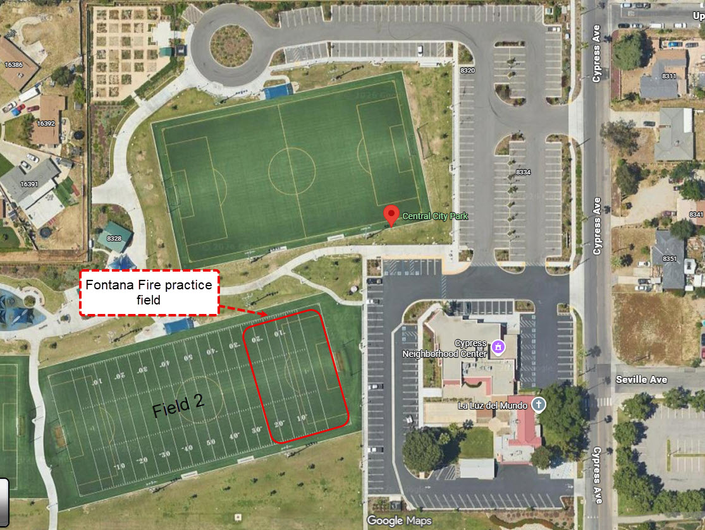

Updated for 2026 Season
Youth Soccer Teams for Kids in Fontana, California
Fontana Fire FC provides a fun and supportive soccer environment for kids in the Fontana community. Our teams are open to players born between 2012 and 2021, and we focus on developing soccer skills, confidence, teamwork, and a love for the game.
Interested in joining? Visit our Contact Page to learn more about registering your child.
Our Teams
⚽ Age Groups
Players born 2012 – 2021
Approximately ages 5–14
Boys & Girls (Co-ed)
⏰ Practice Schedule
Monday & Wednesday
6:00 PM – 8:00 PM
All age groups practice during this time.
📍 Practice Location
Central Park
8380 Cypress Ave
Fontana, CA 92335
All teams currently practice at this location.
📅 Season Info
2026 Season
Schedule subject to change
Our Practice Field
Central Park
Practice Field View

Fontana Fire FC is proud to serve families throughout Fontana and surrounding communities with a youth soccer program focused on development, teamwork, and fun.